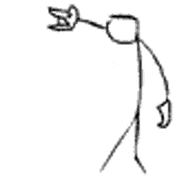

Metal denilince akla gelen bir kaç genre :
Heavy metal (veya kısaca metal), 1960'lı yılların sonlarında 1970'li yılların başlarında İngiltere ve ABD'de gelişen bir rock müzik türüdür. Kökenleri blues rock, psikedelik rock ve acid rock'a dayanan heavy metal grupları; kalın ve ağır bir ses, distortion, uzun gitar soloları ve yüksek ses gibi kendine özgü elementler geliştirmiştir. Türün öncüleri olan Led Zeppelin, Black Sabbath ve Deep Purple 1968'de kurulmuştur. İlk etapta müzik eleştirmenlerince hor görülseler de geniş kitlelere hitap etmeyi başarmışlardır. Led Zeppelin ve Black Sabbath'ın izinden giden bazı Amerikan grupları, 1970'li yıllarda heavy metali modifiye ederek daha erişilebilir bir hale getirmiştir. Judas Priest, Heavy metali Blues türünün etkisinden kurtararak bu türün gelişimini tetiklemiş, bir başka grup olan Motörhead ise türe sertlik ve hız katarak Heavy metalin gelişmesine katkıda bulunmuştur. Iron Maiden gibi New Wave of British Heavy Metal akımından etkilenen gruplar da bu gelişmeyi devam ettirmiş ve 1970'li yılların sonunda heavy metal dünya çapında hayran kitlesine ulaşmış, türün hayranlarına İngilizcede "metalhead" ve "headbanger" denmeye başlamıştır. Favori Heavy Metal gruplarım:Judas Priest,Manovar,Black Sabbath
Death metal, heavy metal müziğin ekstrem bir alt türüdür. Genelde palm muting ve tremolo gibi teknikler ile çalınan ve ağır derecede distortion etkisi kullanılmış ve aşağı akort edilmiş gitarlar, derin bir şekilde hırlanan vokaller, çift pedallı bas davulunun sertçe kullanılması, minör anahtarlar ve ahenksizlik, ani tempo ve ölçü değişiklikleri ile diğer metal türlerinden ayırt edilebilir.Tıpkı diğer metal türleri gibi sözlerde çeşitlilik çok olsa da, genelde vahşetli şiddet, siyasi kavgalar, doğa, felsefe ve bilim kurgu gibi konular ele alınır. Favori Death Metal gruplarım:Gojira,Cannibal Corpse,Fear Factory Favori Death Metal şarkılarım:The haviest matter of the universe,From the sky,Scourge of iron,Zero signal